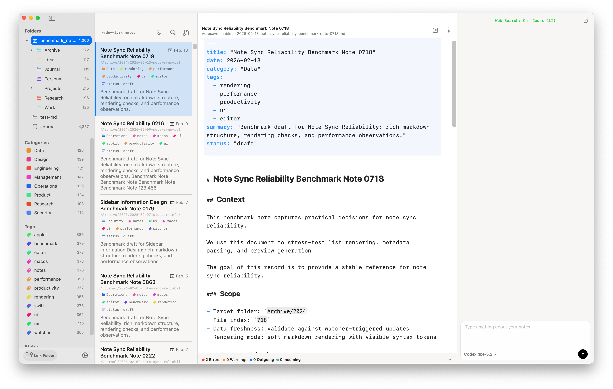
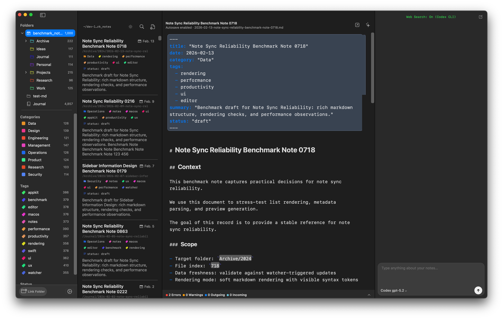

Filesystem as truth
Your notes stay as plain Markdown on disk.
No proprietary container. No migration trap. Mai works with the folders you already own.
Native Markdown library for macOS
Mai keeps your notes in plain files, watches them in real time, and turns large Markdown folders into a fast, structured library.

Filesystem as truth
No proprietary container. No migration trap. Mai works with the folders you already own.
Editor agnostic
Mai handles browsing, metadata, and discovery while your preferred editor stays in charge of writing.
Native speed
Fast startup, responsive lists, and real desktop behavior across large note libraries.
What Mai does well
Watches file changes from Finder and external editors so the app stays aligned with the disk.
Supports YAML and comment front matter for categories, tags, titles, summaries, and more.
Search across large Markdown libraries without forcing a new note format or storage model.
Move from folders to note lists to rendered content with a layout that stays readable at scale.
Categories and tags come from metadata, so your file paths do not dictate how the library is organized.
Your Markdown lives locally, and the app is designed around data ownership instead of lock-in.
Product view

How it fits
Keep drafting in the Markdown editor that already matches your taste and workflow.
Add front matter only when it helps. Mai still provides useful fallbacks if metadata is missing.
Search, filter, and navigate thousands of local notes as one coherent library.
Download
The page below reads the current Sparkle feed to show the newest public build. If that lookup fails, the GitHub releases page is still the fallback.